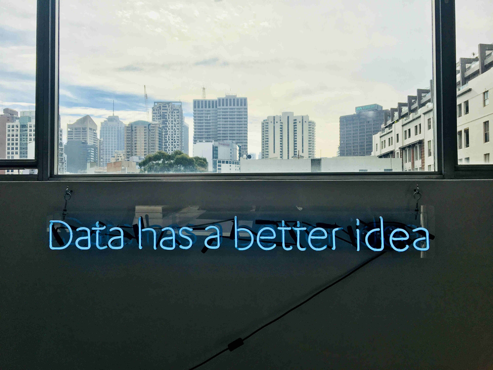

I am a final-year MSc candidate in Data Science @ Mines Nancy, a top-tier national French school of Engineering. I am currently (March - August 2020) a Data Scientist Intern @ Artefact, a consulting firm.
I share some of my Data Science projects on my GitHub.
On my blog, I mainly post about AI (artificial intelligence) and ML (machine learning) on both technical and non-technical aspects.
sylvain.combettes [a t] mines-nancy.org

Photo by Franki Chamaki from Unsplash.